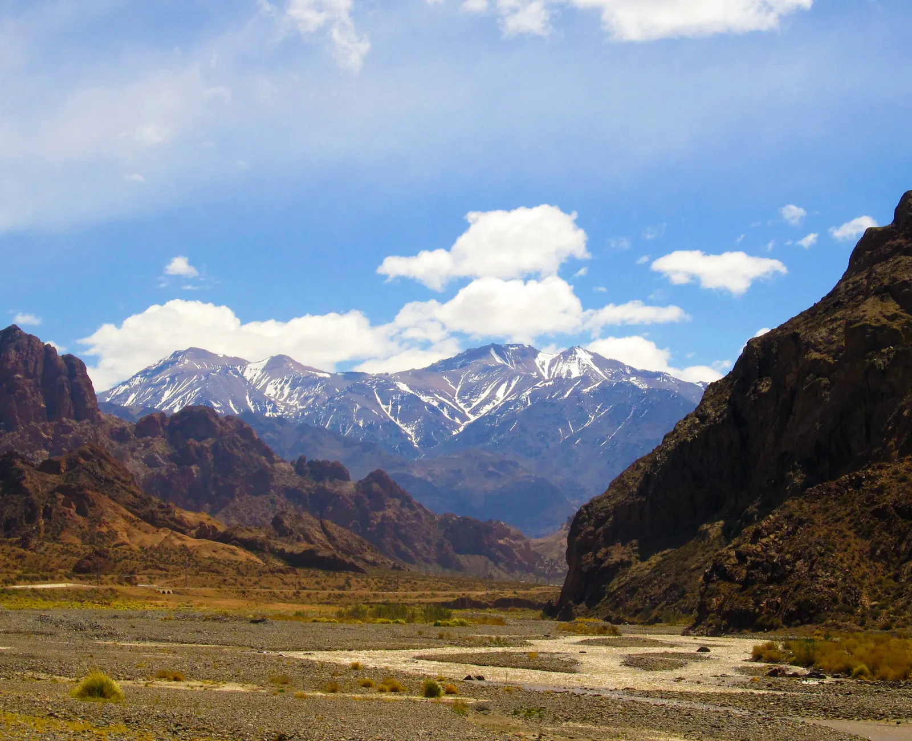
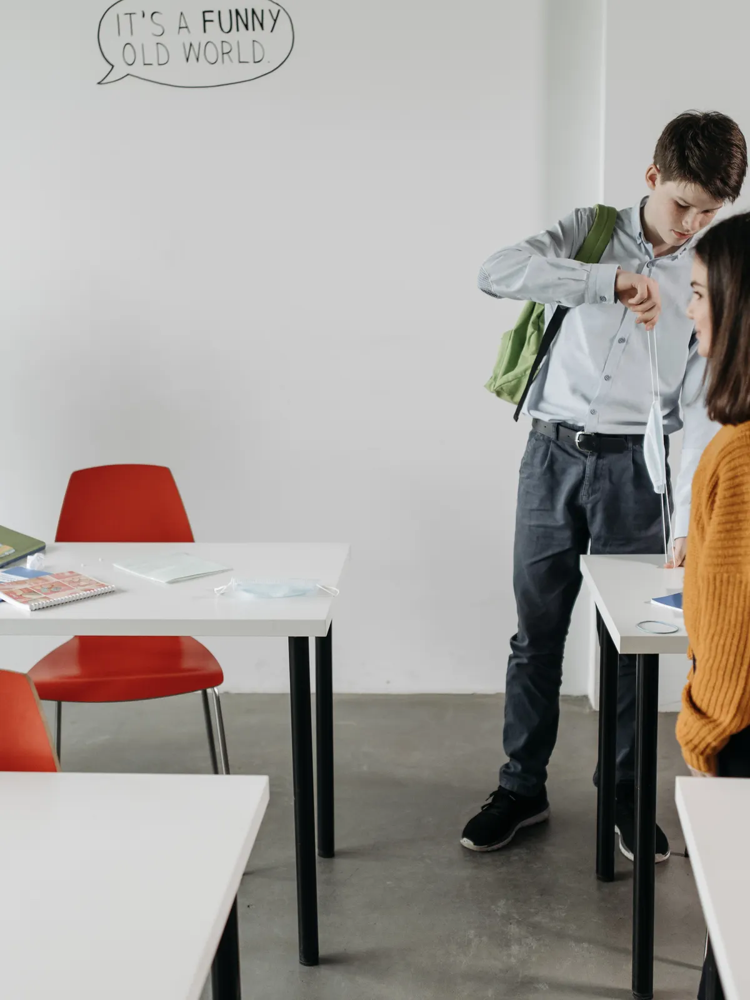
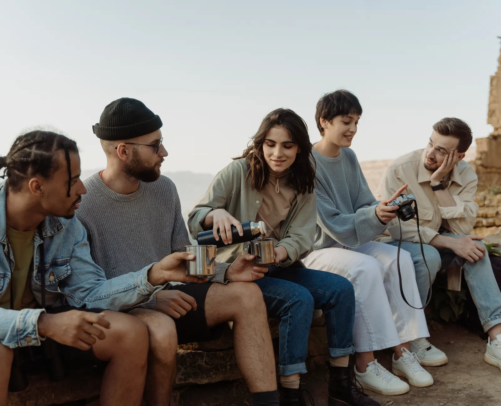
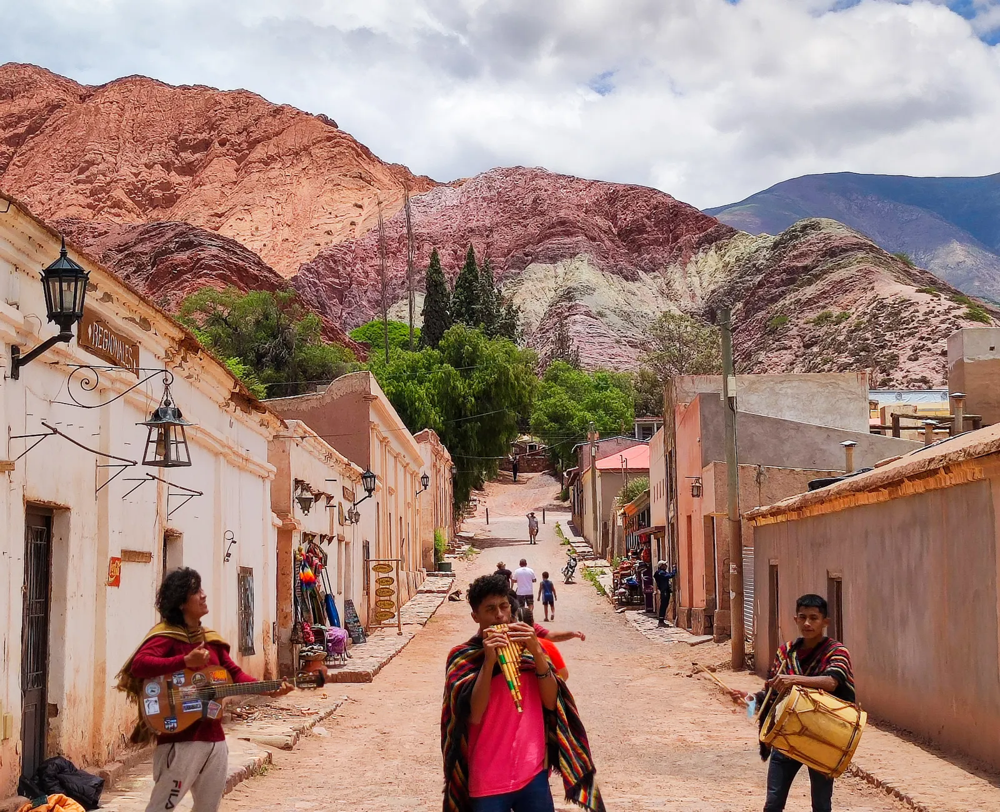

Vida escolar
Entre el aula y la Quebrada
El día a día
Así se vive la escuela
Clases del ciclo básico, prácticas de la orientación elegida y el entorno de la Quebrada de Humahuaca como marco de todos los días. Imágenes ilustrativas del tipo de actividades que propone cada orientación.
La jornada
Un día en la escuela
Ingreso y formación
El día arranca con la entrada a clase y un espacio breve para organizarse antes de las primeras materias.
Materias del ciclo básico u orientación
Según el año, se cursan las materias comunes o las específicas de Informática y Turismo.
Recreo
Un espacio para desconectar, compartir con compañeros y moverse un poco entre clase y clase.
Prácticas y proyectos
Las últimas horas suelen dedicarse a trabajos prácticos, proyectos de la orientación o actividades grupales.
Más allá del aula
Actividades y salidas
Salidas educativas
Recorridos por sitios de la Quebrada de Humahuaca vinculados a Historia, Geografía y la orientación en Turismo.
Proyectos tecnológicos
Trabajos prácticos y proyectos aplicados de la orientación en Informática.
Actos y efemérides
Participación de toda la escuela en las fechas patrias y actividades institucionales.
Feria de proyectos
Un espacio para mostrar los trabajos del año a las familias y la comunidad.
Convivencia
La convivencia se apoya en el diálogo, el respeto entre estudiantes y docentes, y el acompañamiento ante cualquier dificultad.
En imágenes
Así se ve la escuela



¿Querés conocer más de cerca la escuela?
Escribinos por WhatsApp y coordinamos una visita.
Escribinos por WhatsApp